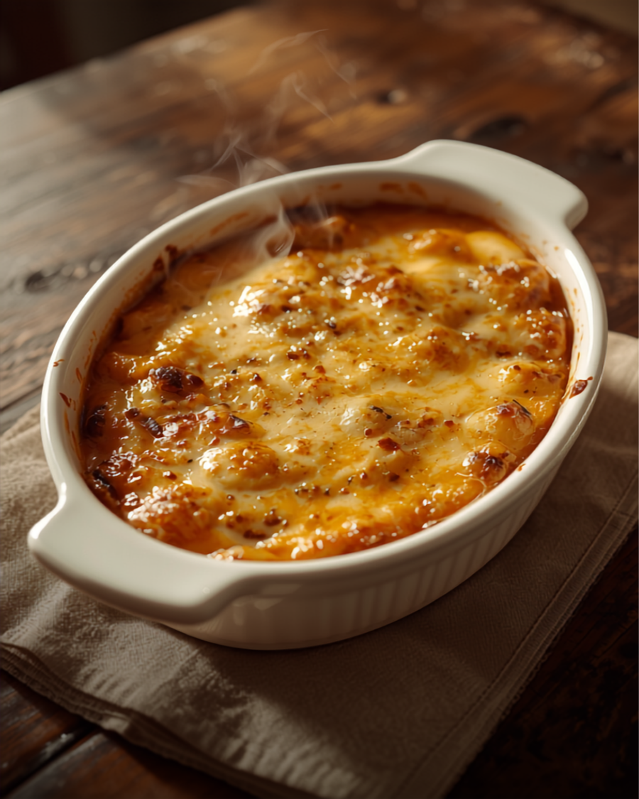

時間をかけて炒めた玉ねぎの甘み。辛さの中にやさしさがある、そんなカレーです。
大盛りを頼んだら1.2kg。学生の町の食堂として、腹いっぱいを本気で追求しています。
NPO法人が運営するお店。スタッフの丁寧な接客と、口直しのアメひとつにも心遣いがあります。
Googleクチコミより実際の声を引用しています。
ほどよい辛さで、ご飯がすすむ美味しさ！丁寧にタマネギを炒めて作ってあるのがわかるカレーで、辛さの中に甘みもあって。
焼きカレーを注文。とても美味しかったです。タバスコがトレイに載って来たので試してみましたが、味変になってとても良かった。
知的障害者の方が働いてますが凄く丁寧な接客で好感が持てます。ボリュームがあって、がっつり食べたい人には向いてるお店。
口直しのアメも一つ一つコメント入りのラッピングしてあり、心遣いが嬉しいなと思いました。ペイペイやネクスペイ使えます。

丁寧なカレーと、びっくりするボリューム。おなかを空かせて来てください。
メニューをもう一度見る